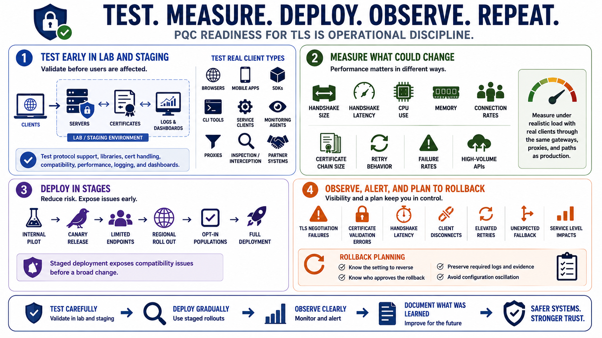

Testing, Deployment, and Operations
Connecting to LMS... Progress: in progress

Narration
Testing should begin away from production. A lab or staging environment lets teams validate protocol support, library behavior, certificate handling, client compatibility, performance, logging, and operational dashboards before users are affected. For TLS, it is important to test real client types: browsers, mobile apps, partner SDKs, command-line tools, service clients, monitoring agents, proxies, and any enterprise interception or inspection components that sit in the path.
Performance testing should measure the parts that could change. Teams should look at handshake size, handshake latency, CPU use, memory, connection rates, certificate chain size, retry behavior, failure rates, and effects on high-volume APIs. A small increase in handshake overhead may be acceptable for one service and costly for another. Measure under realistic load, with realistic clients, through the same gateways and proxies used in production.
Deployment should be staged. Canary releases, limited endpoint groups, internal-only pilots, regional rollouts, or opt-in client populations can expose compatibility issues before a broad change. Observability matters as much as cryptographic selection. Teams should alert on TLS negotiation failures, certificate validation errors, handshake latency, client disconnects, elevated retries, unexpected fallback behavior, and service-level impacts that might otherwise look like generic availability problems.
Rollback planning is part of responsible change management. A team should know what setting to reverse, who approves the rollback, what logs must be preserved, and how to avoid oscillating between configurations without understanding the failure. After deployment, monitoring should continue because client populations change over time. PQC readiness for TLS is operational discipline: test carefully, deploy gradually, observe clearly, and document what was learned.